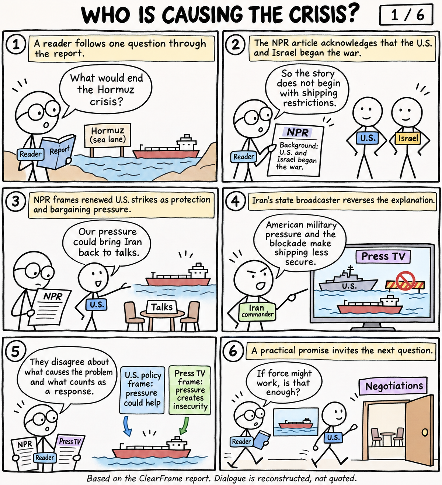
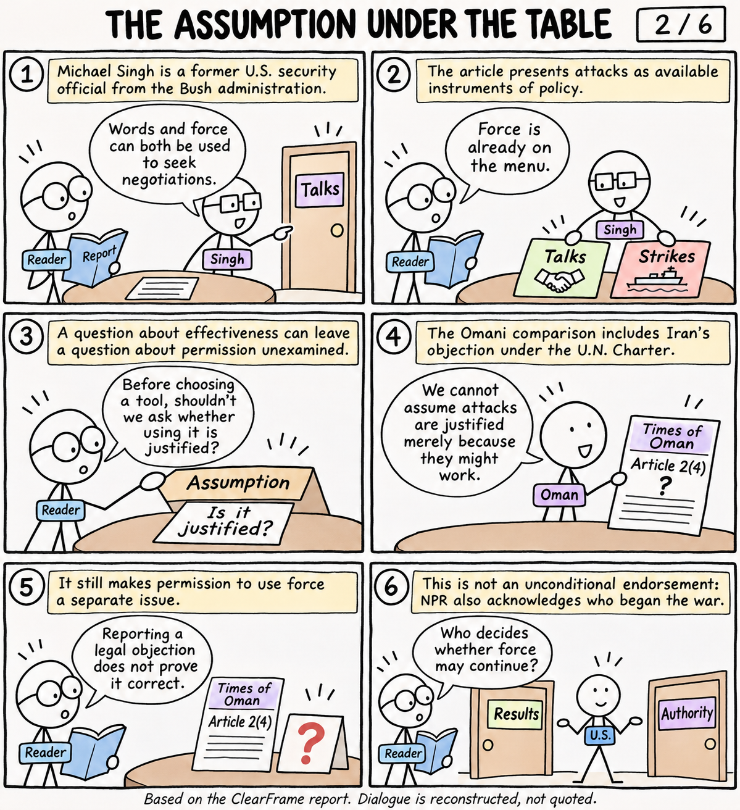
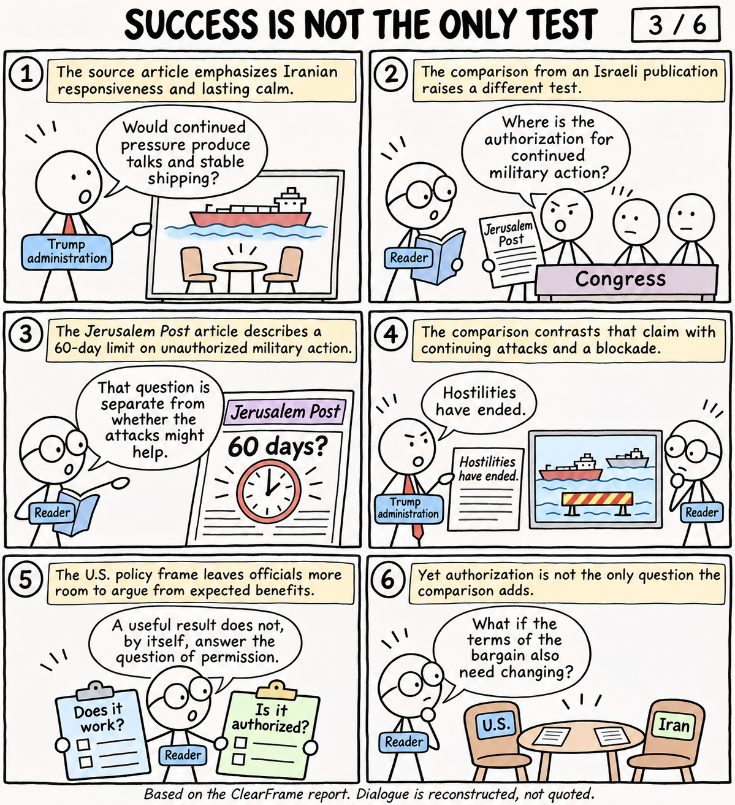
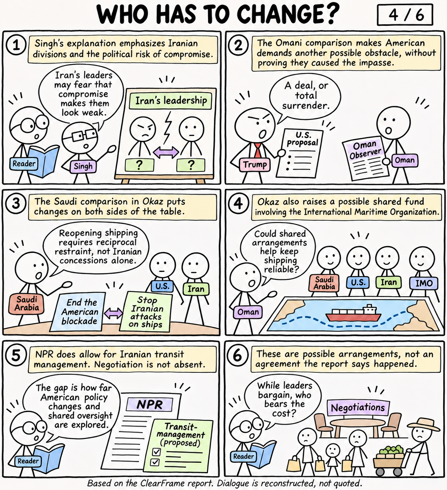
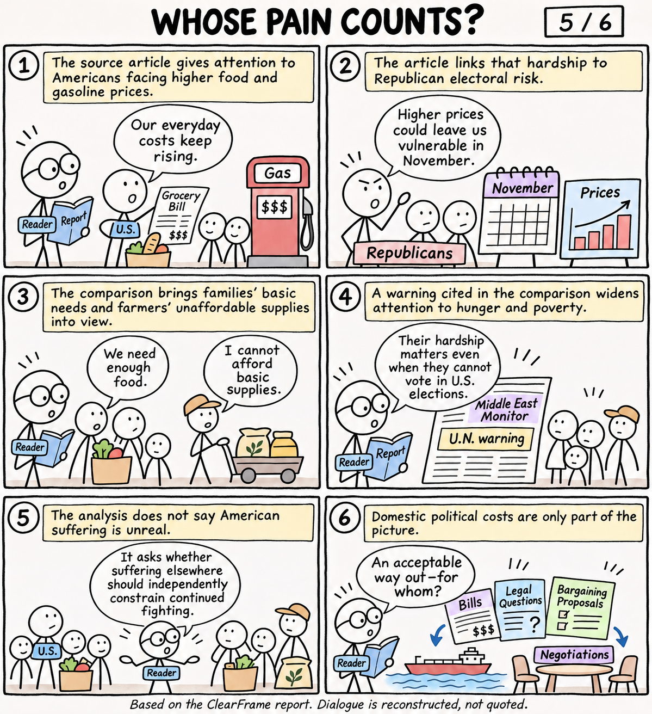
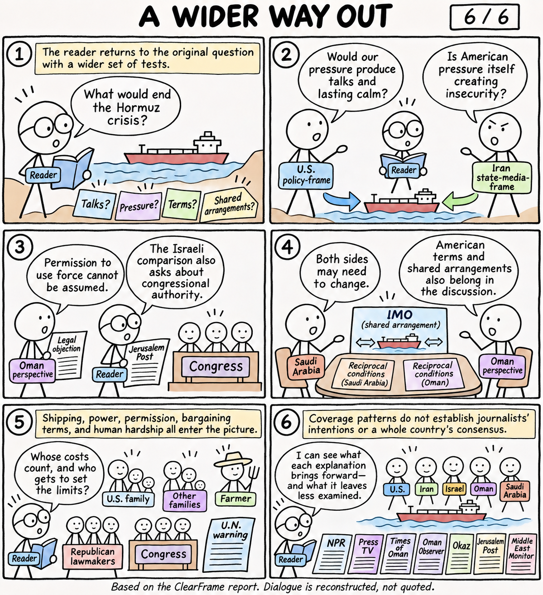

ClearFrame · Stick-figure comic · Six pages
Hormuz: a wider picture
A reader follows one question through competing explanations of the Strait of Hormuz crisis. The story covers all five findings in the ClearFrame report, with an ending that brings them together.
Dialogue is reconstructed from the analysis, not authenticated quotations. Stick figures represent analytical roles; the scenes do not depict actual meetings.
1. WHO IS CAUSING THE CRISIS?

Read the text transcript
Caption: A reader follows one question through the report.
READER balloon: What would end the Hormuz crisis?
Caption: The NPR article acknowledges that the U.S. and Israel began the war.
READER: So the story does not begin with shipping restrictions.
Caption: NPR frames renewed U.S. strikes as protection and bargaining pressure.
U.S. figure: Our pressure could bring Iran back to talks.
Caption: Iran's state broadcaster reverses the explanation.
Iranian commander: American military pressure and the blockade make shipping less secure.
Labels: U.S. policy frame: pressure could help" and "Press TV frame: pressure creates insecurity
READER: They disagree about what causes the problem and what counts as a response.
Caption: A practical promise invites the next question.
READER: If force might work, is that enough?
2. THE ASSUMPTION UNDER THE TABLE

Read the text transcript
Caption: Michael Singh is a former U.S. security official from the Bush administration.
Singh: Words and force can both be used to seek negotiations.
Caption: The article presents attacks as available instruments of policy.
READER: Force is already on the menu.
READER: Before choosing a tool, shouldn't we ask whether using it is justified?
Caption: A question about effectiveness can leave a question about permission unexamined.
Caption: The Omani comparison includes Iran's objection under the U.N. Charter.
Oman perspective: We cannot assume attacks are justified merely because they might work.
READER: Reporting a legal objection does not prove it correct.
Caption: It still makes permission to use force a separate issue.
Caption: This is not an unconditional endorsement: NPR also acknowledges who began the war.
READER: Who decides whether force may continue?
3. SUCCESS IS NOT THE ONLY TEST

Read the text transcript
Caption: The source article emphasizes Iranian responsiveness and lasting calm.
U.S. executive: Would continued pressure produce talks and stable shipping?
Caption: The comparison from an Israeli publication raises a different test.
Congress figure: Where is the authorization for continued military action?
Caption: The Jerusalem Post article describes a 60-day limit on unauthorized military action.
READER: That question is separate from whether the attacks might help.
Executive balloon: Hostilities have ended.
Caption: The comparison contrasts that claim with continuing attacks and a blockade.
READER: A useful result does not, by itself, answer the question of permission.
Caption: The U.S. policy frame leaves officials more room to argue from expected benefits.
Caption: Yet authorization is not the only question the comparison adds.
READER: What if the terms of the bargain also need changing?
4. WHO HAS TO CHANGE?

Read the text transcript
Caption: Singh's explanation emphasizes Iranian divisions and the political risk of compromise.
Singh: Iran's leaders may fear that compromise makes them look weak.
Trump balloon: A deal, or total surrender.
Caption: The Omani comparison makes American demands another possible obstacle, without proving they caused the impasse.
Caption: The Saudi comparison in Okaz puts changes on both sides of the table.
Saudi Arabia: Reopening shipping requires reciprocal restraint, not Iranian concessions alone.
Caption: Okaz also raises a possible shared fund involving the International Maritime Organization.
Oman perspective: Could shared arrangements help keep shipping reliable?
Caption: NPR does allow for Iranian transit management. Negotiation is not absent.
READER: The gap is how far American policy changes and shared oversight are explored.
Caption: These are possible arrangements, not an agreement the report says happened.
READER: While leaders bargain, who bears the cost?
5. WHOSE PAIN COUNTS?

Read the text transcript
Caption: The source article gives attention to Americans facing higher food and gasoline prices.
U.S. parent: Our everyday costs keep rising.
Caption: The article links that hardship to Republican electoral risk.
Republican lawmaker: Higher prices could leave us vulnerable in November.
Caption: The comparison brings families' basic needs and farmers' unaffordable supplies into view.
Family member: We need enough food.
Farmer: I cannot afford basic supplies.
Caption: A warning cited in the comparison widens attention to hunger and poverty.
READER: Their hardship matters even when they cannot vote in U.S. elections.
Caption: The analysis does not say American suffering is unreal.
READER: It asks whether suffering elsewhere should independently constrain continued fighting.
Caption: Domestic political costs are only part of the picture.
READER: An acceptable way out—for whom?
6. A WIDER WAY OUT

Read the text transcript
Caption: The reader returns to the original question with a wider set of tests.
READER: What would end the Hormuz crisis?
U.S. policy-frame figure: Would our pressure produce talks and lasting calm?
Iran state-media-frame figure: Is American pressure itself creating insecurity?
Oman perspective: Permission to use force cannot be assumed.
READER: The Israeli comparison also asks about congressional authority.
Saudi Arabia: Both sides may need to change.
Oman perspective: American terms and shared arrangements also belong in the discussion.
READER: Whose costs count, and who gets to set the limits?
Caption: Shipping, power, permission, bargaining terms, and human hardship all enter the picture.
READER: I can see what each explanation brings forward—and what it leaves less examined.
Caption: Coverage patterns do not establish journalists' intentions or a whole country's consensus.